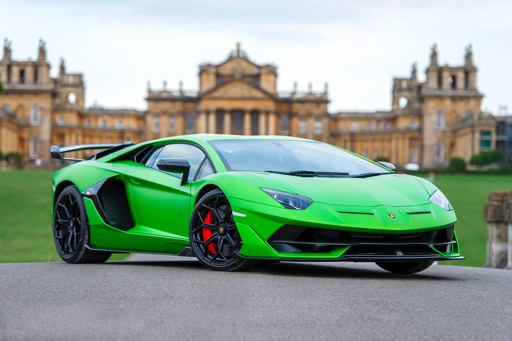

Geschiedenis
Lamborghini is gemaakt door Ferruccio Lamborghini. Het automerk was eerst voor tractoren. Alleen Ferruccio Lamborghini hield heel erg van snelle auto's. Zo had hij een splinternieuwe Ferrari gekocht. Hier was hij op het begin erg blij mee. Alleen later niet meer. Hij moest in een jaar 4 keer terug naar de garage. Hierop sprak Lamborghini de maker van Ferrari aan (Enzo Ferrari). Ferrari die wuifde zijn klacht af en het boeide hem niet. Hierdoor begon Lamborghini zelf autos te maken en zo stond er drie maanden later stond zijn prototype (Lamborghini 350 GTV) op de jaarlijkse autosallon van Geneve in 1963 te shinen. Hierdoor concurreren lamborghini en Ferrari al vanaf 1963 tot het heden.
Lamborghini uitvoeringen
- Lamborghini Huracan 2005
- Lamborghini Centenario
- Lamborghini Aventador SVJ
- Lamborghini Aventador LP700-4
- Lamborghini Aventador LP 700-4 Roadster
- Lamborghini Aventador LP750-4 Superveloce
- Lamborghini Aventador S LP740-4
- Lamborghini Huracan LP610-4
- Lamborghini Huracan Spider LP610-4
- Lamborghini Huracan LP580-2
- Lamborghini Huracan Spider LP580-2
- Lamborghini Veneno
- Lamborghini Sesto Elemento
- Lamborghini Egoista
- lamborghini huracan performante lp640-4
- Lamborghini Urus
- Lamborghini Sian
